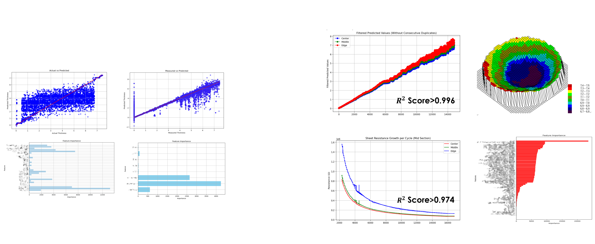
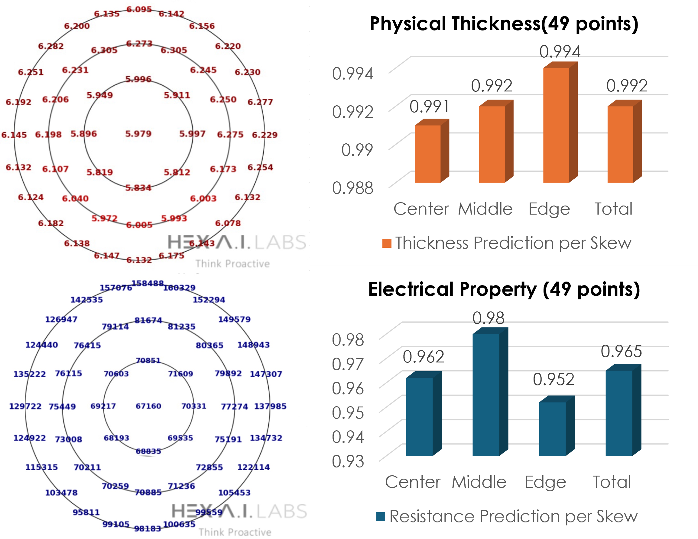

Core Technologies
|
Columbus 1.0.1 (Thickness prediction)
- Real time growth monitoring - Data enhanced A.I. Algorithm - Accuracy 99.2% - Performance can be verified with little data - Derived feature importance |
Columbus 1.0.2 (C/M/E skew prediction)
- Accuracy : 99.6% - Check the real-time prediction results of the deposition process - Derived feature importance |
|
Columbus 1.0.3 (Mapping)
- Prediction wafer 49points Mapping - Accuracy : 99.8% - Avg. RMSE : 0.007 |
Columbus 1.0.4 (Process Abnormality detection)
- Abnormality detection (challenging 1 wafer loss) - Real-time detection of target direct change in case of process abnormality - Statistical-based SPC abnormality detection out |

Prediction of Semiconductor Deposition
Columbus 1.0.0 is data enhanced AI Algorithm based on ALD Algorithm learning, ALD Kinetics, Growth Mechanism, Langmuir model, and precursor Physics. Using small data, we can predict ALD deposition and get immediate response for a new abnormality. Furthermore, Real-time learning is possible.
In conventional equipment, a graph in which thin films are stacked by cycle in ALD process, and a graph in which abnormalities can be detected by thin films in the process. Until now, Conventional equipment knew there was a problem with detecting abnormalities with sensors, but I didn't know where it was coming from. Thickness monitoring, C/M/E skew, absoluteness detection, wafer mapping, electrical properties, refractive index, resistance cap, and others were not possible.

Our AI embedded equipment made it possible to enable thickness monitoring, C/M/E skew, absoluteness detection, and wafer mapping, which were not possible before. Furthermore, we have developed equipment that can detect electrical properties and sheet resistance, and we are upgrading algorithms that can solve refractive and etc.